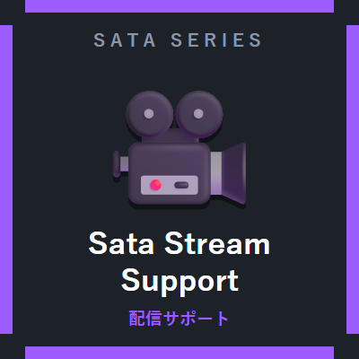

サタの配信サポート
Sata Stream Support — 配信向け5モジュール
配信・録画の画面がそのまま「見せられる画面」になるModです。 ミニマップや統計HUDを画面に出し、死亡地点や敵の接近も逃さず表示。 もちろん配信をしない人の普段使いにも便利です。
モジュール一覧（5）
-
ミニマップ（Minimap）既定ON
画面左上に周辺の地形マップを表示します（北固定・0.5秒ごと更新の軽量設計）。 マーカーや建造物の表示切替つき。ガチマップとは同時にONにできません。
-
ガチマップ（WorldMap）既定OFFJで開く
自分が行ったことのある場所を記録して表示する本格マップ。 ドラッグで移動・ホイールでズーム、クリックで名前つきマーカーの追加・削除ができます。 死亡地点・建造物（村・要塞・森の洋館・ネザー要塞・砦の遺跡・エンドシティ）・ チャンクグリッドの表示切替つき。ミニマップとは同時にONにできません。
-
セッション統計HUD（SessionHud）既定ON
画面右上にプレイ時間・死亡数・移動距離を表示します。 項目ごとに表示/非表示を選べて、配信画面にそのまま映せます。
-
死亡地点マーカー（DeathPoint）既定ON
死んだ場所の座標をチャットに表示し、ワールド内に☠マーカーを出します。 回収に近づくとマーカーは消えます。
-
モンスター接近警告（MonsterAlert）既定ON
敵対モブが近くにいると画面下に⚠と数を表示します。 「後ろ！後ろ！」を自分で気付けます。警告距離は設定可。
ガチマップの操作
| J | ガチマップを開く（モジュールONのとき） |
|---|---|
| ドラッグ | マップの移動 |
| ホイール | ズームイン／アウト |
| 空きをクリック | 名前つきマーカーを追加 |
| マーカーをクリック | マーカーを削除（確認あり） |
| 「建造物を探す」ボタン | 近くの建造物を探索して◈マークで表示します。負荷対策のため実行は30秒に1回までです。 |
既知の制限
- ガチマップはネザーでは天井の地形を拾うため、実用性が低いです（今後の対応候補です）。
- 建造物探索は負荷の大きい処理のため、30秒のクールダウンがあります。
- ミニマップとガチマップは排他です。どちらか一方だけをONにして使います。
ほかのSata Mod
Sata Core（前提Mod） ／ べんり道具箱 ／ バトルサポート ／ けんちくヘルパー ／ まきもどし